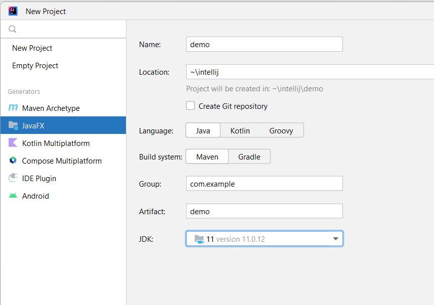
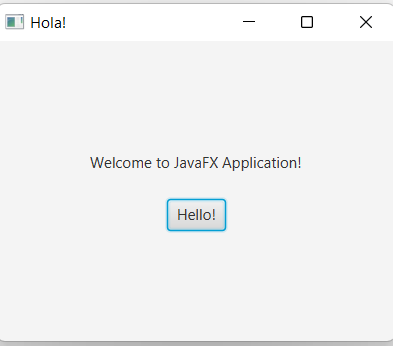

Java FX
JavaFX es una plataforma de aplicaciones de cliente de próxima generación de código abierto para sistemas integrados, móviles y de escritorio construidos en Java. Es un esfuerzo de colaboración de muchas personas y empresas con el objetivo de producir un conjunto de herramientas moderno, eficiente y con todas las funciones para desarrollar aplicaciones de clientes enriquecidos.
En este tema nos centraremos en las aplicaciones de escritorio. JavaFX está disponible en Windows, Mac OS X y Linux.
Dado que la biblioteca JavaFX está escrita como una API de Java, el código de la aplicación JavaFX puede hacer referencia a las API de cualquier biblioteca de Java. Por ejemplo, las aplicaciones JavaFX pueden usar bibliotecas API de Java para acceder a las capacidades del sistema nativo y conectarse a aplicaciones de middleware basadas en servidor.
Es en esencia un conjunto de paquetes en Java y el sucesor de swing.
Documentación oficial para JavaFX JDK11
Crear un nuevo proyecto JavaFX
En IntelliJ, seleccionamos File -> New Project

Seleccionamos JavaFX, lo llamamos HolaMundo y le damos a crear. Para ejecutarlo nos ponemos en la clase principal y hacemos click en Run.

Workflow de una aplicación JavaFX
-
ApplicationLa clase deApplicationdel paquete javafx.application es el punto de entrada de la aplicación en JavaFX. Para crear una aplicación JavaFX, se debe heredar esta clase e implementar su método abstractostart(). La clase principal tiene el nombre del proyecto seguido de Application y extiende de la claseApplication, que es la que gestiona el ciclo de vida de una aplicación JavaFX. -
mainmethod Cuando ejecutamos la aplicación JavaFX por primera vez, se lanza el métodomainque contiene el métodolaunchque lanza la aplicación JavaFX y no vuelve hasta que se cierra la aplicación. -
initmethod Cuando un aplicación JavaFX es lanzada, el métodoinitse ejecuta primero. Este método se encuentra en la claseApplicationy está vacío, por lo que podremos sobreescribirlo si queremos hacer algo con él. -
startmethod El métodostartse ejecuta justo después del métodoinit.startes un método abstracto que heredamos de la claseApplicationpor lo que siempre hay que sobreescribirlo y darle cuerpo. -
stopmethod Cuando la aplicación acaba porque los usuario cierran la ventana de la aplicación se ejecuta el métodostop. Igual que pasa con el métodoinit, este método se encuentra en la claseApplicationy está vacío también. Si no lo sobreescribimos no se hará nada con él.
Estructura de una aplicación JavaFX
En general, una aplicación JavaFX tendrá tres componentes principales, Stage, Scene y Node como se muestra en la siguiente figura:

Stage
Uno de los símiles que más se aproxima para entender estos conceptos es ver el stage como un escenario, teatro o cine, en el cual, se desarrollan escenas. Dicho de otro modo, stage es un espacio y una escena define que sucede en ese espacio. Visto así, tenemos que un stage es el contenedor de nivel superior, que como mínimo consta de una escena, que a su vez es contenedora de otros elementos.
Si nuestra programa es una aplicación de escritorio, el stage será la ventana, con su barra de título, y botones de maximizar, minimizar o cerrar, en el caso que que se ejecutase en un navegador web como Chrome, nuestro stage esta embebido dentro del navegador.
Un Stage JavaFX, javafx.stage.Stage, es un contenedor de nivel superior y extiende de la clase Window. Representa una ventana en una aplicación de escritorio JavaFX. Dentro de un stage JavaFX, se puede insertar un Scene JavaFX que representará el contenido que se muestra dentro de una ventana, dentro de un Stage.
Cuando se inicia una aplicación JavaFX, se crea un objeto Stage raíz que se pasa al método start(Stage primaryStage) de la clase raíz de la aplicación JavaFX. Este objeto Stage representa la ventana principal de la aplicación. Se pueden crear más objetos nuevos Stage más adelante si la aplicación necesita abrir más ventanas.
Normalmente las aplicaciones tienen una ventana o stage de nivel superior, ya que muchas ventanas pueden conducir a una mala experiencia por parte del usuario.

Crear un Stage
Stage stage = new Stage();
Mostrar un Stage
Solo con crear un objeto Stage no basta para que se muestre en la aplicación. Para que el Stage sea visible, se debe llamar a su método show() o showAndWait().
stage.show();
La diferencia entre los métodos show() y showAndWait(), es que show() hace visible el Stage y sale del método inmediatamente, mientras que showAndWait() muestra el objeto Stage y luego lo bloquea (permanece dentro del método showAndWait()) hasta que se cierre el stage.
Establecer un Scene a un Stage
Para mostrar algo dentro de un Stage, se debe establecer un objeto Scene en el Stage. El contenido de Scene se mostrará dentro del Stage cuando se muestre el Stage.
VBox vBox = new VBox(new Label("A JavaFX Label"));
Scene scene = new Scene(vBox);
Stage stage = new Stage();
stage.setScene(scene);
stage.show();
Ponerle título a un Stage
El título del Stage se muestra en la barra de título de la ventana.
stage.setTitle("Aplicación JavaFX");
Posicionar un Stage
Se puede establecer la posición (X,Y) de un Stage a través de sus métodos setX() y setY(). Los métodos setX() y setY() establecen la posición de la esquina superior izquierda de la ventana.
Stage stage = new Stage();
stage.setX(50);
stage.setY(50);
Dimensionar un Stage
Para establecer el ancho y el alto de un Stage utilizaremos los métodos setWidth() y setHeight().
Stage stage = new Stage();
stage.setWidth(600);
stage.setHeight(300);
Establecer una ventana modal
Si queremos establecer la ventana como modal en un Stage usamos el método initModality(). La modalidad determina si la ventana que representa el Stage bloqueará otras ventanas abiertas por la misma aplicación.
@Override
public void start(Stage primaryStage) {
primaryStage.setTitle("JavaFX App");
Stage stage = new Stage();
stage.initModality(Modality.APPLICATION_MODAL);
//stage.initModality(Modality.WINDOW_MODAL);
//stage.initModality(Modality.NONE);
primaryStage.show();
stage.showAndWait();
}
- Modalidad.APPLICATION_MODAL, bloqueará todas las demás ventanas abiertas por esta aplicación. No puede acceder a ninguna otra ventana hasta que se haya cerrado esta ventana.
- Modality.WINDOW_MODAL el
Stagecreado bloqueará la ventana delStageque "posee" (propietario) elStagecreado, pero solo eso. No todas las ventanas de la aplicación. - Modalidad.NONE el
Stageno bloqueará ninguna otra ventana abierta en esta aplicación.
Establecer propietario de un Stage
Un Stage puede ser propiedad de otro Stage. El propietario de un stage se establece a través de su método initOwner().
@Override
public void start(Stage primaryStage) {
primaryStage.setTitle("JavaFX App");
Stage stage = new Stage();
stage.initModality(Modality.WINDOW_MODAL);
stage.initOwner(primaryStage);
primaryStage.show();
stage.showAndWait();
}
Dar estilo a un Stage
Se puede dar estilo a un stage utilizando el método initStyle(). Hay un conjunto de estilos diferentes:
- DECORATED: es una ventana estándar con decoraciones del sistema operativo (barra de título y botones para minimizar/maximizar/cerrar) y un fondo blanco.
- UNDECORATED: es una ventana estándar sin decoraciones del sistema operativo, pero aún con un fondo blanco.
- TRANSPARENT: es una ventana sin decorar con un fondo transparente.
- UNIFIED: es como un escenario decorado, excepto que no tiene borde entre el área de decoración y el área de contenido principal.
- UTILITY: es una ventana decorada, pero con decoraciones mínimas.
stage.initStyle(StageStyle.DECORATED);
Stage a pantalla completa
Se puede establecer el stage a modo de pantalla completa a través del método setFullScreen(). Nota: puede que no obtengamos el resultado esperado sino añadimos un Scene en el stage.
VBox vbox = new VBox();
Scene scene = new Scene(vbox);
primaryStage.setScene(scene);
primaryStage.setFullScreen(true);
primaryStage.show();
Eventos del ciclo de vida de un Stage
Stage emite algunos eventos que se pueden escuchar.
- Close Request: se recibe una notificación cuando el usuario hace click en el botón con la X en la esquina superior derecha de la ventana del escenario. Escuchar el evento de cierre del escenario puede ser útil si se necesita limpiar algunos recursos después de cerrar la ventana principal del escenario, o p. necesita detener algunos hilos, etc.
primaryStage.setOnCloseRequest((event) -> {
System.out.println("Closing Stage");
});
- Hiding: se llama antes de que se oculte el stage, pero después de que se haya solicitado ocultarlo.
primaryStage.setOnHiding((event) -> {
System.out.println("Hiding Stage");
});
- Hidden: se llama después de que se oculta el Stage.
primaryStage.setOnHidden((event) -> {
System.out.println("Stage hidden");
});
- Showing: se llama después de que se solicite que se muestre el stage, pero antes de que se muestre.
primaryStage.setOnShowing((event) -> {
System.out.println("Showing Stage");
});
- Shown: se llama después de que se muestre el stage.
primaryStage.setOnShown((event) -> {
System.out.println("Stage Shown");
});
Eventos de teclado del Stage
Podemos escuchar eventos de teclado en un stage. De esta forma, se puede capturar todos los eventos del teclado que ocurren mientras el stage tiene el foco. Ejemplo que escucha las teclas ESC y Retorno en el teclado cuando un Stage tiene foco:
primaryStage.addEventHandler(KeyEvent.KEY_PRESSED, (event) -> {
System.out.println("Key pressed: " + event.toString());
switch(event.getCode().getCode()) {
case 27 : { // 27 = ESC key
primaryStage.close();
break;
}
case 10 : { // 10 = Return
primaryStage.setWidth( primaryStage.getWidth() * 2);
}
default: {
System.out.println("Unrecognized key");
}
}
});